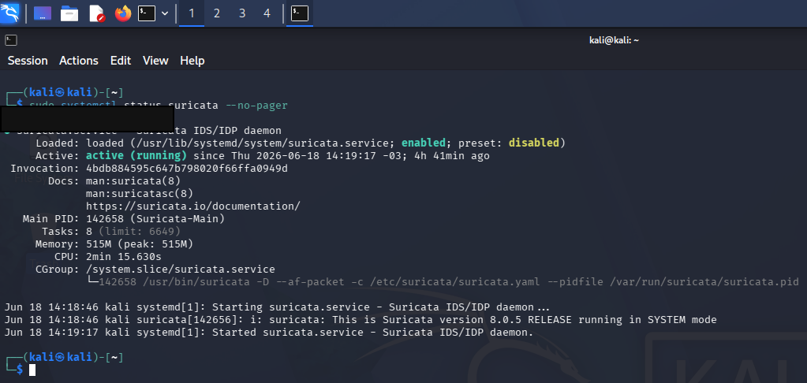
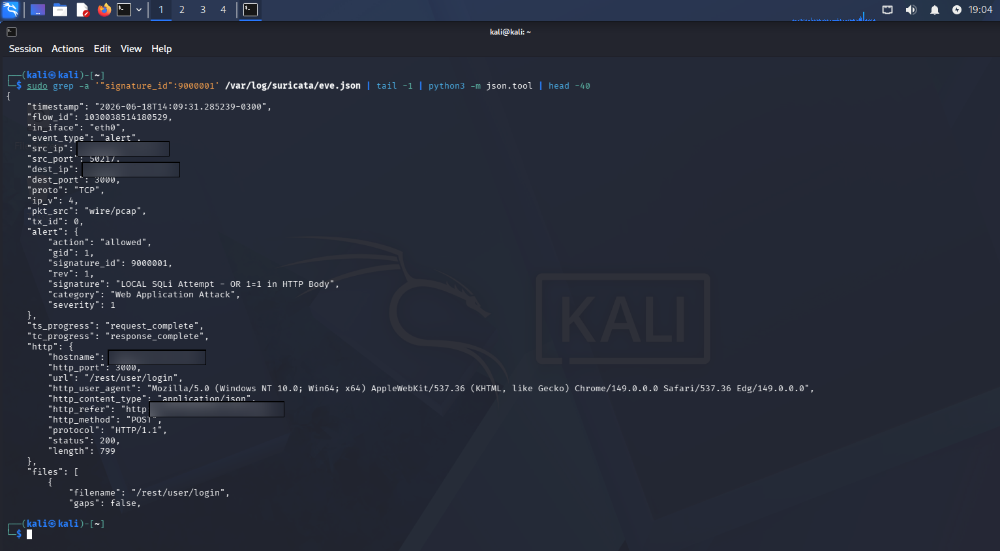

Laboratório Suricata
Como o Suricata detecta uma tentativa de SQL Injection
Neste artigo, documento um estudo prático sobre como o Suricata identifica uma tentativa de SQL Injection, gera alertas e transforma tráfego suspeito em evidência técnica para análise de segurança.
Contexto do laboratório
O objetivo deste estudo foi entender, na prática, como um IDS de rede consegue identificar uma atividade suspeita. Para isso, utilizei o Suricata em um ambiente de laboratório, analisando tráfego HTTP e validando a geração de alertas.
O foco não foi apenas executar uma ferramenta, mas compreender o caminho completo da detecção: tráfego de rede, regra de assinatura, alerta gerado, registro em log e análise da evidência.
O que é SQL Injection
SQL Injection é uma técnica de ataque em que comandos SQL maliciosos são inseridos em campos ou parâmetros de uma aplicação. Quando uma aplicação não valida corretamente as entradas do usuário, esse tipo de ataque pode tentar manipular consultas ao banco de dados.
Em um cenário real, uma tentativa de SQL Injection pode indicar exploração de vulnerabilidade, reconhecimento ofensivo ou tentativa de acesso indevido a informações sensíveis.
Fluxo da detecção
Durante o laboratório, o Suricata atuou como sensor de rede. Ele analisou o tráfego, identificou o padrão suspeito e gerou um evento estruturado para investigação.
- Requisição suspeita: uma tentativa de SQL Injection foi enviada contra uma aplicação web.
- Análise do tráfego: o Suricata inspecionou os pacotes em tempo real.
- Regra de detecção: o comportamento foi comparado com assinaturas configuradas no IDS.
- Geração do alerta: o Suricata registrou assinatura, severidade, origem, destino e contexto.
- Registro no eve.json: o evento foi salvo em formato JSON para análise e integração.
Evidências do laboratório
As evidências abaixo mostram o Suricata em execução e o alerta gerado no arquivo eve.json.
Esses registros são importantes porque conectam a teoria com a prática de investigação.


eve.json.Principais aprendizados
Este laboratório reforçou que um alerta de segurança precisa ser analisado dentro de um contexto. Não basta ver que uma ferramenta gerou uma detecção; é necessário entender origem, destino, assinatura, severidade e evidência registrada.
Também ficou claro como ferramentas de IDS, logs estruturados e SIEM se conectam em um fluxo de Blue Team.
O Suricata detecta, o eve.json registra e uma solução como o Wazuh pode centralizar e facilitar a análise.
Conclusão
O estudo mostrou como o Suricata pode transformar tráfego suspeito em evidência de segurança. A tentativa de SQL Injection saiu de uma simples requisição HTTP e se tornou um alerta documentado, pronto para investigação e correlação.
Esse tipo de prática fortalece minha base em Redes, Segurança da Informação, SOC e Blue Team, pois conecta conceitos técnicos com situações reais de monitoramento.